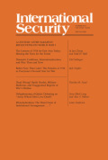

收录于合集

作品简介
【作者】 杰克·斯奈德（Jack Snyder），美国最有影响力的国际关系研究学者之一，美国艺术与科学院院士。他长期为《外交事务》《纽约时报》《经济学人》等媒体撰稿，曾担任《美国政治学评论》和《国际安全》杂志编委。现任美国哥伦比亚大学政治学教授，主要研究领域为民主化与民族主义、帝国扩张、后“9·11”时代的国际关系理论等。主要著作有：《权力与进步：转型中的国际政治》、《选举战争：为何新兴民主国家走向战争》（合著）、《帝国的迷思：国内政治与对外扩张》、《进攻的意识：军事决策与1914年的灾难》等。
【编译】 崔宇涵（国政学人编译员，北京大学国际关系学院）
【校对】 吴皓玥
【审核】 王川
【排版】 陈育涵
【来源】 Snyder, Jack. (2014). Better Now Than Later: The Paradox of 1914 as Everyone’s Favored Year for War. International Security, 39(1), 71-94.
期刊简介

《国际安全》（International Security）是经过国际和国家安全领域同行评议的顶级学术期刊，其刊发的论文主题广泛，涵盖战争与和平等传统安全问题与环境、人口、人道主义、恐怖主义等时新的安全议题。它成立于1976年，由哈佛大学贝尔弗科学与国际事务中心（Belfer Center for Science and International Affairs at Harvard University）编辑，麻省理工学院出版社（MIT Press）出版，每年四期。根据Journal Citation Reports显示，该杂志2019年影响因子为5.432。
Better Now Than Later: The Paradox of 1914 as Everyone’s Favored Year for War
宜早不宜迟：1914年各国同时希望战争的“时机悖论”
Jack Snyder
推荐语
本文研究了为何1914年各欧洲大国都希望战争的“时机悖论”，指出各国决策的有限理性以及通过强制外交减缓权力转移是该悖论产生的主要机制，同时重新审视了建立在形式模型方法上的战争的讨价还价理论的解释力。
文章导读
01
开篇引言
第一次世界大战在1914年爆发的一个原因是，欧陆的所有强权都认为这是开战的有利时机，而推迟战争于己不利，从而构成了一个“时机悖论”。 欧洲各大国的军事和经济能力、可能的战争计划以及国内政治的约束等基本事实或多或少都是众所周知的。但是，各方对战争预期的未知不包括他们各自在信息掌握程度的不一致。此外，各国的主要政治家都考虑到了战争失败和社会动荡的可能性。然而，尽管各国拥有大致相似的信息，并担心发生灾难的可能性，它们还是在1914年认为，战争宜早不宜迟。
这种悖论不仅本身是一个有趣的谜题，而且长期被视为一战及一般战争的中心原因。杰弗里·布莱内（Geoffrey Blainey）认为，当双方对各自的相对权力存在分歧时，战争就会发生。威廉·沃尔福斯（William Wohlforth）进一步论证了布莱内的观点。詹姆斯•费隆（James Fearon）扩展并形式化了这一观点，他提出在三种条件的作用下，理性国家会选择打一场代价高昂的战争，即非公开信息（private information）、承诺问题（commitment problems）以及利害关系的不可分割性（indivisibility of stakes）。
作者认为，费隆提出的上述三种主要机制都无法回答关于时机悖论及其在引发战争中的作用的关键问题。而在费隆的分析中处于边缘的两种机制—— 多维权力评估中的有限理性，以及试图通过强制外交来减缓权力转移 ——有助于解释1914年出现的时机悖论。 这些机制由植根于军国主义和民族主义文化的背景战略假定所触发，它们在1914年扭曲了欧洲政治家面临的选择。 尽管费隆的理论假定各国对所有相关信息都给予同等的关注，但在1914年，每个大国的战略考量都过度专注于自己的国内问题和对盟友的焦虑，而这就解释了时机悖论的出现。
02
理论中的时机悖论
关于战争的 讨价还价理论（bargaining theory） 如何看待对立的各国同时对战争前景保持乐观这一问题？作者回顾了布莱内、沃尔福斯以及费隆的理论。
布莱内 主要关注各国有关相对权力的分歧的后果。他指出，对战争结果的不确定性使双方都感到乐观，而从战争中获得的信息减少了各国有关相对权力的分歧，进而导致和平；同时，民族主义引发的情绪也可能导致各方都盲目乐观。 沃尔福斯 同样更关注认知权力 (perceived power)的影响，尤其是俄国力量的崛起。他的结论之一是，德国错误地认为俄国的力量将很快超越自己，因此发动了阻止俄国崛起的不必要的预防性战争。而对于短期内各国普遍的乐观倾向，沃尔福斯仅仅强调了一个许可性条件（permissive condition）：两个对立联盟间近乎平等的权力创造了双方都可以设想获胜的可能性，这种可能性由于人们普遍相信进攻性军事行动的有效性被放大了。但沃尔福斯的理论依然无法解释1914年的“时机悖论”。
费隆 扩展了布莱内的观点，不仅囊括了双方有关相对权力的分歧，还涉及对双方“战斗意愿”的不同评估。在这一框架下，费隆提出三个理由解释为什么理性的国家会希望战争： （1）双方都有关于自身实力的非公开信息，且无法令人信服地披露，使双方均感到乐观；（2）如果未来双方的相对权力发生转变，则双方无法可信地承诺履行协议；（3）双方认为，在关键方面，战争的利害关系是不可分割的。 后来的学者一直争论上述三种机制中，哪一种最好地解释了战争的起源，以及战争结束的时间和方式。
03
1914年的“时机悖论”
1914年的情形几乎是“布莱内问题”的翻版： 主要欧陆国家不仅高估了自身联盟当前的相对权力，更重要的是，它们低估了联盟未来可能的相对权力。 这一预期导致各国认为战争宜早不宜迟。 同盟国一边，德国的军力扩张在1914年达到顶峰，奥匈帝国似乎也达到了其摇摇欲坠的国家的权力极限。对协约国来说，军力对比的趋势看似乐观，但它们更担心如若结果不利，“7月危机”会使联盟分崩离析。 在1905和1911年，俄国没能够在两次摩洛哥危机中支持法国；同样，法国也未能在波斯尼亚危机中支持俄国对抗德奥。若再有一次相似的失败，可能会对盟友间的互信和信心造成致命打击。
具有讽刺意味的是，在这个悖论中，1914年对任何一个欧陆大国来说都不是发动战争的好时机。与崇尚进攻的军国主义学说相反，当时的军事技术更有利于防守的一方。因此，尽管欧洲各大国对相对均势和其趋势的评估各不相同，但如果它们计划保持守势并推迟战争，那么其在维护自身安全方面均前景明朗。作者指出，应当从 深层的概念战略框架中存在的偏见 出发，研究在1914年使外交趋于反常瘫痪的博弈假定，因为它首先促成了危机的发生，并构建了各方在危机中对各种选择的评估。
04
非公开信息
对于1914年的“时机悖论”最简单的可能解释是，国家不可能安全或可信地与对手分享 非公开的有利信息 。作者指出，这一论点无法令人信服， 因为许多基本的战略信息和假定是欧洲战略精英们的共识。 关于欧洲战略形势的大多数关键信息为各国军队所熟知。协约国大致了解德国战争计划；反过来，德国人知道俄国在组建新军，准备向德国发起快速进攻。而俄国了解德国进行预防性战争的动机和所做准备。各国的共识建立在相当良好的情报工作以及关于军事理论假设的常识的基础上。
斯蒂芬·范埃弗拉（Stephen Van Evera）提出了将非公开信息与先发制人的攻击、预防性战争联系起来的最有力的理论论据。他指出，进攻性的计划尤其依赖于意外的成功，强调秘密——换句话说，强调非公开信息的作用。范埃弗拉的观点在历史上值得争论，在理论上也很有说服力。它还以另一种方式表明，对进攻十分狂热的潜在战略假定可能促成了1914年的悖论。
05
承诺问题
有关承诺问题的解释指出，1914年的俄国在相对权力变化有利于自己的情况下，无法可信地保证不会向德国和奥匈帝国强加一项它们无法忍受的协议。这种情势将同盟国推向预防性战争，并在很大程度上解释了为什么它们在1914年希望战争。但作者认为，这种论点仍需满足两个主要条件。
首先，它没有解释德国为何保留施里芬计划（Schlieffen Plan）的框架，该框架使得德国在面对不断提升的俄国军事力量时十分脆弱。 如德国按照老毛奇（Helmuth von Moltke the Elder）的计划部署，则将使德国避免损害比利时的中立性，继而避免把英国卷入战争，因此也会缓解德国的外交压力。所以作者认为，只有在德国执行施里芬计划的情况下，俄国的承诺问题才可能导致第一次世界大战。 因此，需要进一步解释德国对进攻的狂热崇拜。其次，俄国的崛起并不能解释为何俄国和法国选择在1914年摊牌。 法俄在看似不太有利的1914年不仅接受了挑战，而且还十分急切，是因为它们专注于另一个承诺问题：它们对彼此的承诺。
而在1914年7月法国支持俄国时，德国又为何没有退避三舍，另寻机会拆散法俄同盟呢？其原因在德国战略的概念框架中：德军的施里芬计划计划假定法俄会并肩作战，任何涉及其中一方的战争都不可避免地会涉及另一方。这个框架很大程度上忽略了法俄在1905年到1911年的几次危机中都没有相互支持；而当法俄可能开始考虑开战时，施里芬计划就成为一个自我实现的预言。
上述论点很难与费隆的理论相一致。然而，他的论述中有两个次要论点或许更有启发性：有限理性和通过领土征服积累权力。
06
**** 有限理性与贝叶斯更新（Bayesian Updating） ****
费隆指出，对“军事冲突的可能结果的不同预期”的一个可能解释为“世界的复杂性，因此不同国家的军事分析人员就不同的技术、理论和战术对战争进程可能产生的影响可能得出不同的结论”。费隆将复杂性视为一个可行的论点，但将之束之高阁，因为它是一个“有限理性”的解释。
而作者在本节引入了 贝叶斯理性（Bayesian rationality） 来分析这种复杂性： 所有欧洲战略家都在不断更新他们对均势的预期，及其对承诺问题的影响。 这种更新的基础是欧洲军队共有的基本预期，但各国也存在一些不同的假定。 某种程度上，各国军事文化和理论训练的差异塑造了作为更新基础的不同的先验假定（prior assumption）。 例如，预防性战争思想在普鲁士军队有着悠久的传统，因此不难理解德国总参谋部官员在获取俄国军事力量不断增长的新信息时，相当重视这种理性。 同时，不同国家的贝叶斯先验（Bayesian priors）的内容和权重也可能受到军队和平民意见的影响。 一项关于法国的新研究将重点放在了平民，尤其是具有军事民族主义倾向的总统雷蒙德•庞加莱(Raymond Poincare)身上。从1912年开始，他致力于使法国的外交承诺无条件地支持俄国在巴尔干地区的行动。
贝叶斯方法在塑造基础信念时引入了各种文化、组织和意识形态偏见，当战略家在分析中整合新信息时，这些偏见以不同的方式聚焦和构建问题。 因此，欧洲的战略家们正在从有限理性过程中形成的不同基础更新他们的预期。
07
预防权力转移
俄国和法国在1914年接受了德国的挑战的另一个原因是，通过在巴尔干半岛的有限征服以及在黑海建立势力范围，德国和奥匈帝国已能够阻止预期的权力转移。 丹·赖特（Dan Reiter）曾指出，在战争过程中，当前较强但潜在权力较弱的一方可能会将领土征服作为一种权力资源来减少或抵消预期的权力转移。按照赖特的观点，对德国来说，1914年的问题就在于德国能否在不发动预防性战争的情况下，攫取足够的战略资产，解决日益迫近的相对衰落问题。从这个意义上说，强制性外交和有限战争或许可以取代预防性战争。
同盟国也正是这样分析1914年的巴尔干局势的。如果德国和奥匈帝国能够削弱塞尔维亚、诱使罗马尼亚加入同盟国，并让土耳其沦为它们的附庸，就可能不必诉诸危险的、全面的预防性战争而遏制俄国。然而，在1914年8月协约国已经足够强大，不以大规模战争一劳永逸地纠正均势已经是不可能的了。
08
风险：大陆战争还是世界大战
随着欧洲分裂为两大对立集团，战略家和政治领导人们意识到他们之间的斗争有可能引发一场毁灭性的战争，而各国也曾经试图通过政治与外交上的讨价还价极力避免。 但这种讨价还价的动力非但没有导致妥协，反而导致了冒险的竞争。 时任德国首相贝特曼·霍尔维格（Bethmann Hollweg）的私人秘书就曾表示， 欧洲大战可能会造成潜在的巨大代价，但这种风险可能在一场危机中成为外交杠杆。 同样，德国提尔皮茨上将（Adm. Alfred von Tirpitz）的“风险舰队”理念也并非指望德国海军能够在正面决战中击败英国，而是预期这支舰队的存在将阻止英国对德国港口进行封锁，从而能使德国放手在欧洲大陆与法俄较量。
临近1914年时，所有大国都试图在强制性外交博弈中不断加码。 一些研究认为，1912年的巴尔干危机使奥匈帝国意识到拥有德国提供的空白支票的重要性，这将使它们在危机边缘能够向俄罗斯发出警告。与此同时，俄国人越来越热衷于强制外交，以期不战而屈人之兵。开战前的一两年，沙皇的内阁面临着国家杜马中大量民族主义者越来越多的批评，他们要求改变软弱的俄国外交。
09
利害关系的不可分割性
在费隆提出的三条核心机制中，他对于利害关系的不可分割着墨最少，因为他认为任何有关重大利害关系的决策都可以被有旁支付（side payments）或抵消性战略补偿（offsetting strategic compensation）所分割。他认为决策的不可分割更多是一种社会建构而非战略事实。
但俄国似乎确实面临着一个罕见的困境：俄国在土耳其海峡的战略利益真的很难通过可信的妥协进行分割。土耳其海峡对俄国有极其重要的航运和军事意义，而与他国分别控制土耳其海峡两端的入口无助于解决俄国的问题。 这种不可分割性造成了俄国与土耳其，以及任何试图控制海峡的国家间的安全困境。 由于德国在该地区的影响力不断上升以及土耳其对海军的扩充，俄国认为控制土耳其海峡的机会愈发渺茫。因此，与欧洲普遍采取预防性行动的动机相同，俄国人渴望占领海峡以解决海峡的安全困境。
不过，上述问题并不是俄国在1914年进行动员的原因，因为俄国海军意识到在土耳其扩充其海军之前，俄国没有能力占领海峡，因而更倾向于维持现状。战争一开始，英国就阻止了土耳其购买战舰，但出现在地中海东部的德国战舰编入土耳其海军序列，使得土耳其达到了同样目的。
10
评估军力平衡中的认知偏见
虽然土耳其海峡问题并不是俄国在1914年进行总动员的原因，但仍然可以说明权力的平衡和转移可能会被欧洲政治家所误解。俄国的盟友不愿意理解，更不用说估计俄国在海峡所面临的安全困境。考虑到欧洲大国在土耳其海峡问题上获得了大致相似的信息，那么如果各国对其战略意义的评估不同，最可能的原因是面临不同情势而产生观点差异。作者认为，费隆为了建立理论而将分析局限于国家层次的理性假设，这是明智的； 但若要真正理解1914年的各种动态，当理性主义理论无法给出确定解释时，有必要考虑其他类型的假设作为替代或补充。
例如，心理机制可能促成了1914年“时机悖论”的产生。 当对手似乎天生就倾向于剥削行为，因此似乎很有可能在未来的权力转移中利用进攻性优势时，预防性战争就显得更有意义。 心理学中的“基本归因错误”（fundamental attribution error）便描述了这样一种机制，认知心理学家通常认为，行动者和观察者的不同位置使行为者更容易注意到环境因素，观察者会更突出个性因素。而在战略竞争关系中，正如罗伯特·杰维斯（Robert Jervis）所指出的，这种认知偏差使行动者很难理解他人如何将其防御行为视为威胁。 作者指出，这类系统性偏见可能是一个有助于解释各国对不同战略问题的认知焦点、对动机和选择的不同评估，以及1914年“时机悖论”的某些方面的背景因素。
11
不确定性下的战略与执行的整合
作者在本节主要论述了大国间军事决策体制的不统一以及战略计划组织上的不协调所导致的一国内部以及国家之间的战略评估出现的差异。例如，俄国的文职官员和军事决策者对战略有着特别不同的看法和偏好，而又没有一个有知识、权威、政治影响力和远见的领导人够整合所有的政治与外交考虑。因此，俄国的政策在纵向及横向都缺乏连贯性。不论军方还是文职官员，都是以综合不同派系间往往互相矛盾的观点解决内部分歧。 因此，欧洲各国从相互矛盾的战略假定出发的一个原因是，它们既关注战略评估，也同样关注自身的内部政治现实。另一个产生影响的制度机制是，各国的军队都倾向于准备在冲突一开始就执行自己的计划，来减少行动的不确定性。 在1914年，所有的欧洲国家的军队都认为本国在这个意义上已经“准备就绪”。
12
国内与国际公共关系
作者讨论的最后一个促使各方热衷于算计战争最佳时机的因素是，每个国家都需要在本国民众眼中制造一种受委屈的假象。可以理解的是，每个大国都更关注其行为在国内的合理性问题。即使对立政权在其民众眼中也无可指摘，在本国民众的眼中无可指责似乎仍是有利的。
13
结论
费隆的理性战争讨价还价理论是强有力的，因为理论必须简化才能保持其普适性。然而，直接从理论中得出的简单解释，本身并不能充分解释为何法国、德国和俄国会同时相信1914年是战争的有利年份。 非公开信息只是一个边缘问题。权力转移所造成的承诺问题或许更重要，但这一问题背后并没有不可避免的结构性困境，而是军事理论和战争计划中对进攻的狂热崇拜所导致的脆弱的社会构建。具体议题的不可分割，并不是战争的原因，而其一般概念更多是意识形态的信条，而非结构性事实。不过，由理性讨价还价理论衍生出的认知、组织性和国内政治因素有助于指向可能的答案。 欧洲的政治家和战略家们试图推理出均势的战略后果、趋势及其与联盟凝聚力的关系。然而，由于他们专注于本国特有的战略问题和国内民众，并基于不同的基本信念，因此他们的推论不同。不过，仍有以下三点值得注意。 第一，沃尔福斯的关于相对均势的许可性条件，使各国都可以设想其战胜或战败的条件，从而为它们在1914年开战乐观而对推迟战争悲观奠定了基础。第二，范埃弗拉关于对进攻的狂热崇拜会导致预防性战争的观点。 对进攻的狂热崇拜将权力转移的后果放大为承诺问题，加剧了原本属于非公开信息的小问题，助长了以领土征服积累权力的观念，使任何资源和战略资产的分配看起来天生不稳定。 第三，欧洲政治精英们普遍将注意力集中在本国的社会分歧和派系斗争、摇摇欲坠的政府安排，以及其脆弱的正当性上。 在那个时代，大战略是一场三层博弈，在国内和国际同盟的层面上拼凑起合作联盟的需要，似乎比外国竞争对手构成的威胁更加紧迫。
译者评述
本文考察了战争的理性讨价还价理论对于1914年各国为何都希望战争这一“时机悖论”的解释力，在历史和理论两个方面均有一定的意义。一战爆发的原因一直是史学界和国际关系学界不断研究和争论的重大议题，而相比于较为宏观的研究成果，本文更加注重其中的因果机制，指出在当时欧洲各国的“进攻崇拜”以及不同国家的文化、组织和意识形态偏见的背景下，各国决策者的有限理性以及出于防御逻辑的强制外交手段是导致1914年出现“时机悖论”的两个主要机制，从而为我们理解一战的爆发提供了一个更为微观和动态的视角。同时，本文也以一战的案例讨论了詹姆斯•费隆提出的战争的讨价还价理论在应用于案例分析时的价值以及不足之处。这一理论采用数学化的形式模型方法建立了对战争的普遍解释，理论简洁、逻辑清晰，但本文的讨论显示出，有必要针对这一理论进行更多具体的案例研究，在具体的历史情境下，通过与其他替代性解释的对比，才能够展现出这一理论真实的解释力及其局限性。
文章观点不代表本平台观点，本平台评译分享的文章均出于专业学习之用, 不以任何盈利为目的，内容主要呈现对原文的介绍，原文内容请通过各高校购买的数据库自行下载
**
**
**
**
**
**
添加 “国小政”微信
获取最新资讯


国政学人
支持学术公益与知识传播
微信扫一扫赞赏作者 __赞赏
已喜欢，对作者说句悄悄话
取消 __
发送给作者
发送
最多40字，当前共字
上一页 1/3 下一页
长按二维码向我转账
支持学术公益与知识传播
受苹果公司新规定影响，微信 iOS 版的赞赏功能被关闭，可通过二维码转账支持公众号。